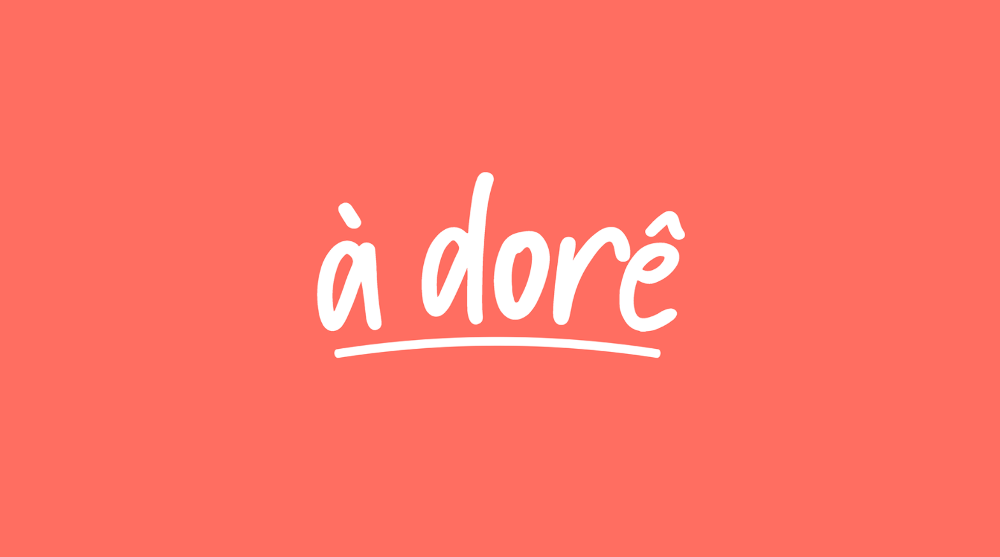

À Dorê
Porções de amor, de colher em colher.
Este projeto foi desenvolvido na cadeira de Direção de Arte 2020.2 no curso de Design Digital na Universidade Federal do Ceará. Nesta cadeira nos foi dado a oportunidade de contar histórias através de um projeto. O à dorê foi feito em parceria com Lethissia Souza, Beatriz Sgobi, Lucas Amorim e José Nery.
Um pouco sobre
À Dorê vem das memórias, do carinho e saudade que moram em cada receita. Contamos histórias através de receitas e presentes. Uma demonstração de amor quando a distância requer adaptações, um serviço pago e personalizado. O propósito do projeto surge da contação de histórias naturalmente feita através das receitas que passam de família em família, em diferentes preparos.
